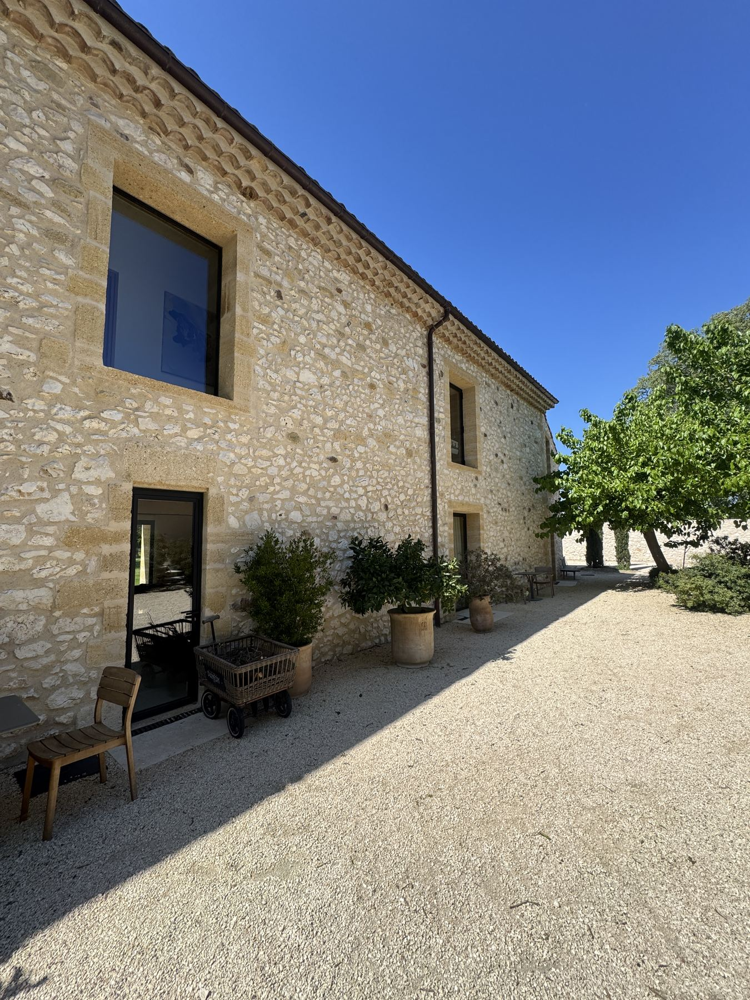

Une exigence d'architecte, un métier d'atelier
Depuis plus de dix ans, FMG Metal Studio dessine et fabrique des ouvrages métalliques sur mesure depuis son atelier de Sernhac, dans le Gard. Nous nous considérons moins comme des métalliers que comme un atelier d'architecture métallique : chaque projet part d'un dessin, d'une contrainte de lumière ou de structure, avant d'être un ouvrage.

Une valeur ajoutée sur la menuiserie acier
Au-delà de la ferronnerie classique, nous avons développé une expertise spécifique en menuiserie acier — fenêtres, portes et verrières à la française — qui nous distingue des métalliers traditionnels. Cette compétence est aujourd'hui portée par notre collection déposée Pleine Lumière®.
De l'étude à la pose
-
Étude & conception
Prise de côtes, échanges avec l'architecte ou le maître d'ouvrage, dessin technique et choix des matériaux et finitions.
-
Fabrication en atelier
Découpe, soudure, façonnage et finitions réalisés à Sernhac, avec un contrôle qualité à chaque étape.
-
Pose & finition
Installation soignée sur site, réglages et finitions pour une intégration parfaite à l'existant.
Acier, inox, laiton
Nous sélectionnons le matériau en fonction de l'usage et de l'esthétique recherchée : acier brut ou thermolaqué, inox brossé pour les ambiances contemporaines, laiton pour une touche plus chaleureuse. Chaque ouvrage bénéficie d'un traitement adapté à son environnement, intérieur comme extérieur.

Envie d'échanger sur votre projet ?
Particuliers, architectes, professionnels — nous étudions votre demande, dans le Gard comme partout en France.
Nous contacter